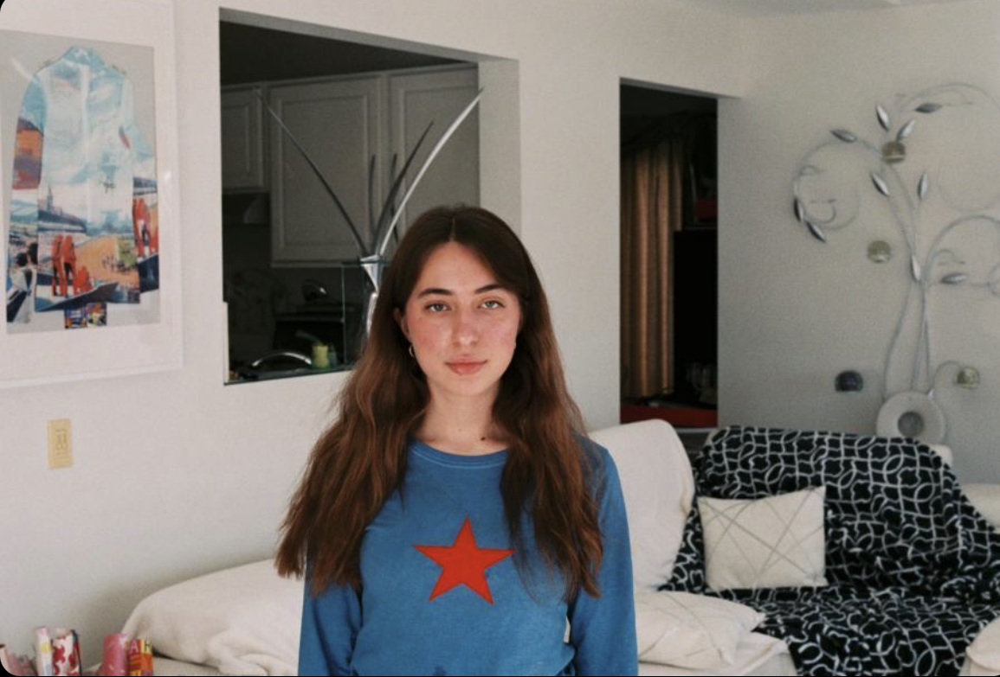
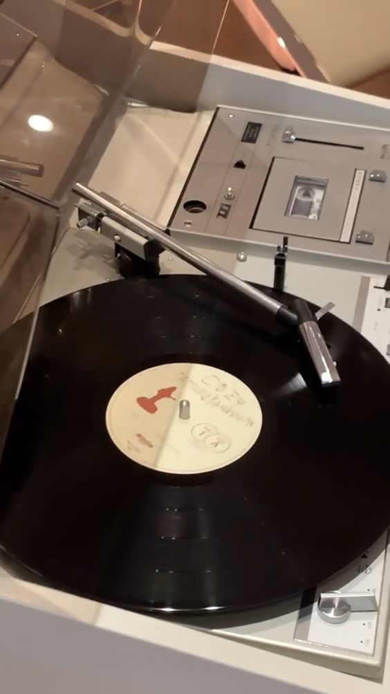

Introduction to Legs of a Jellyfish.
Greetings, I am Chloe Darancou. I currently study Information, Microbiology, and Computer Science at the University of Michigan. Ever since I was a young girl, I have held a deep love for art in all forms. I enjoy fashion, drawing, writing, reading, and music! The Legs of a Jellyfish will primarily focus on my love for music. In recent years, I have developed an apprecation to listening to albums from music artist while understanding the framework and flow behind each album. Furthermore, I have started collecting vinyl, which further encorages me to listen to albums in full. I started this website to review musical albums and masterpieces I have completly immersed myself in.
The Legs of a Jellyfish seeks to understand musical albums' intentions and impact on society. This blog analzyes music from diverse genres and artists who provide varying insightful messages. The Legs of a Jellyfish seeks to promote music from a variety of different sounds. I have linked my Spotify which not only has playlists featuring the artists and albums mentioned but also has more recommended music. The Legs of a Jellyfish will continue to expand and evolve overtime through reviewing new artists and genres.
